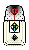
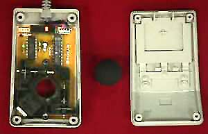

The Mouse
The Mouse 

If you look in the brighter region just to the right of Videolab's keyboard, you will see Videolab's mouse. Like a keyboard, a mouse allows a person to tell a computer what he or she wants it to do. You have used a mouse before, but have you ever looked inside a mouse? There are many different kinds of mice. One kind of mouse, called an optical mouse, has a bright red light that shines out of the bottom. This light allows the mouse to tell which way it is being moved. Another kind of mouse uses a rubber ball to figure out which way it is being moved. In the picture below, you can see the inside of this kind of mouse. Notice the black rubber ball in the middle of the image. The ball fits in the hole on the piece of the mouse shown on the left. This way, the ball touches the mousepad when the mouse is set down. Then when you move the mouse, the ball rolls and the mouse knows that it is being moved and in which direction it is moving.
 